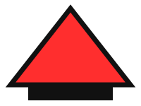

FEHLER 404 · VORHANG VERHANGEN
HIER IST
KEIN ZIRKUS.
Diese Seite hat sich offenbar hinter dem Vorhang versteckt. Die gute Nachricht: Zurück zur Manege ist es nur ein Klick.
Zur Startseite
FEHLER 404 · VORHANG VERHANGEN
Diese Seite hat sich offenbar hinter dem Vorhang versteckt. Die gute Nachricht: Zurück zur Manege ist es nur ein Klick.
Zur Startseite